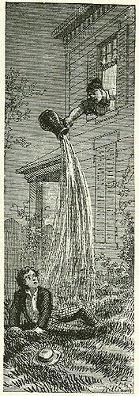

|
 Convinced that no one loves him, Tom strikes a melancholy pose under Becky Thatcher's window -- until "a maid-servant's discordant voice profaned the holy calm" as she empties a pitcher on his head. The text calls the maid a "servant," and Williams' drawing leaves her race indeterminate, but in Hannibal such a servant would almost certainly have been a black slave. The text strikes another discordant note, though I think most readers overlook it, when Tom reacts by throwing something at the maid, a "missile" heavy enough to break the glass in the window. Throwing a rock at a woman seems out of character for Tom, and it's not clear how the woman's status, either as "servant" or a slave, qualifies his act. The Barrett Collection, UVA PS1306 .A1 1876b |